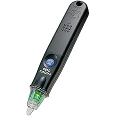

検電器が向く人
- 通電有無を素早く一次確認したい人
- 作業前チェックを短時間で回したい人
- 最初の1本を決めたい人
電気工事で使う確認工具は、検電器とテスターで役割が違います。
検電器は、通電しているかどうかを手早く見る一次確認向け。テスターは、電圧・導通・抵抗などを数値で確認する切り分け向けです。
通電有無の確認を素早く回したいなら検電器。電圧や導通を数値で確認したいならテスター。最初は検電器で一次確認の流れを作り、必要に応じてテスターを追加するのが実務的です。

先輩テスターと検電器は、似た確認工具に見えるけど役割はけっこう違うよ。

新人どちらも電気が来ているか見る道具だと思っていました。
先輩検電器は「有無を早く見る」。テスターは「数値で確認する」。この順番で考えると現場で迷いにくいね。
どちらが上位というより、確認したい内容が違います。
通電の有無を素早く見る工具です。作業前の一次確認や、複数箇所を短時間で見る場面に向きます。
電圧・導通・抵抗などを数値で確認する工具です。原因切り分けや裏取りに向きます。
電圧値を見たい、導通を確認したい、抵抗を測りたい時はテスターが必要です。
最初からテスターだけに頼ると、確認手順が長くなりやすいです。一次確認は検電器で固定すると判断が安定します。
測定工具は、使い方や測定レンジが合っていないと誤判定につながります。検電器で一次確認し、必要な場面でテスターを使う流れを作ると安心です。
確認内容ごとに、検電器とテスターのどちらが向いているかを整理します。
| 確認したいこと | 向いている工具 | 理由 |
|---|---|---|
| 通電有無を素早く見る | 検電器 3480 | ペンタイプで取り回しやすく、作業前チェックを短時間で回しやすいです。 |
| 電圧を数値で確認する | HIOKI 3244-60 | 電圧値を具体的に見たい場面では、テスターが必要です。 |
| 導通を確認する | HIOKI 3244-60 | 配線や回路のつながりを確認したい時は、導通確認ができるテスターが向きます。 |
| 最初の1本を選ぶ | 検電器 3480 | まず一次確認の流れを作ると、現場での判断が安定しやすいです。 |
最初は3480で一次確認の習慣を作り、電圧・導通・抵抗を数値で見る必要が増えたら3244-60を追加する流れが分かりやすいです。
現行記事の商品画像とAmazonリンクを維持して、一次確認用と数値確認用に分けて整理しています。

作業前に通電しているかどうかを素早く見るための検電器です。
電圧値を詳しく測る工具ではありませんが、一次確認を短時間で回しやすく、最初に持つ1本として優先度が高いです。
複数箇所を確認する現場でも、取り回しの良さが効きます。
通電有無を素早く確認したい人、作業前チェックを標準化したい人、まず最初の確認工具を決めたい人に向いています。

電圧・導通・抵抗を数値で確認したい時に使いやすい小型テスターです。
検電器で一次確認した後、より詳しく原因を切り分けたい場面で役立ちます。
通電有無だけで足りない作業が増えてきたら、追加導入の候補になります。
電圧を数値で確認したい人、導通や抵抗も見たい人、検電器だけでは判断しきれない現場が増えてきた人に向いています。
文章だけでは掴みにくい場合は、実機動画で確認手順の順番を見ておくと運用しやすくなります。
テスター側の基本操作と確認項目を把握するのに向いている動画です。
※追加導入後の運用イメージを具体化できます。
一次確認の手順を短時間で把握できる動画です。
※最初の1本として運用する際の注意点確認にも使えます。
最初から両方そろえる必要はありません。まず通電有無を確認する検電器を持ち、数値確認が必要になったらテスターを追加する流れが分かりやすいです。
3480。通電有無の一次確認を短時間で回しやすいです。
3244-60。数値で確認したい場面ではテスターが必要です。
3244-60。原因切り分けや配線確認まで進めやすいです。
検電器で一次確認、必要に応じてテスターで数値確認という順番にします。
新人まず3480で通電有無を見て、数値が必要になったら3244-60を足す感じですね。
先輩そう。確認工具は高機能なものを一気に買うより、確認工程に合わせてそろえる方が使い方も安定するよ。
※当サイトはAmazonアソシエイト・プログラムに参加しており、適格販売により収入を得ています。